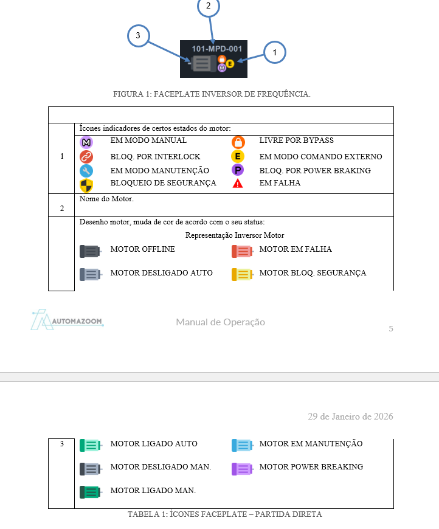
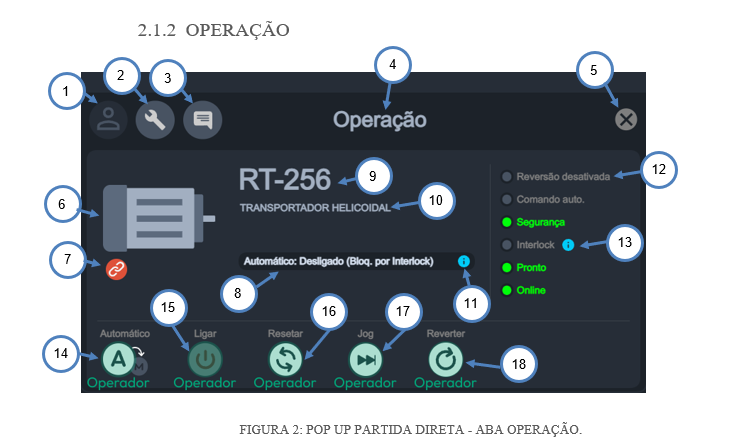
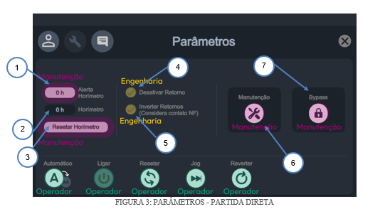
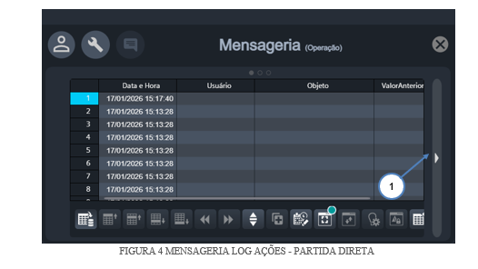
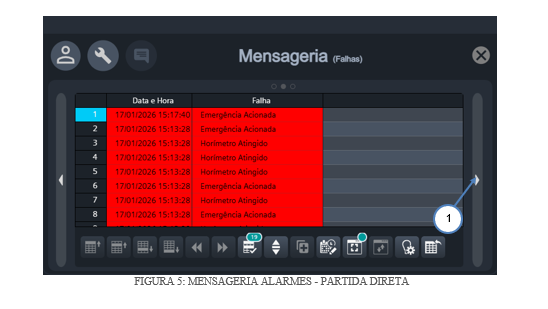
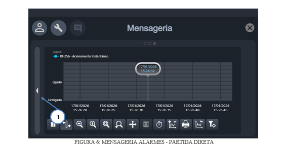
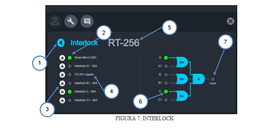
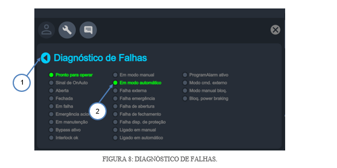

2.1.1 - FACEPLATE
Para cada motor existente no sistema, há um painel de informações resumidas referente a este.

Figura 1: Faceplate inversor de frequência
Ícones da Faceplate - Partida Direta:
| ITEM | DESCRIÇÃO |
|---|---|
| 1 |
Ícones indicadores de estados do motor:
|
| 2 | Nome do motor. |
| 3 | Desenho do motor, que muda de cor de acordo com seu status. |
2.1.2 - OPERAÇÃO

Figura 2: Pop-up partida direta - Aba operação
A tela apresenta um resumo das condições atuais do motor, além dos comandos de operação.
| ITEM | DESCRIÇÃO |
|---|---|
| 1 | Botão abre a aba de operação. |
| 2 | Botão abre a aba de parâmetros. |
| 3 | Botão abre a aba de mensageria. |
| 4 | Nome da aba atual. |
| 5 | Botão para fechar a popup. |
| 6 | Desenho do motor conforme seu status. |
| 7 | Ícones indicadores de estados do motor. |
| 8 | Status do motor. |
| 9 | Nome do motor. |
| 10 | Descrição do motor. |
| 11 | Botão abre a aba de diagnóstico. |
| 12 | Resumo das condições do motor. |
| 13 | Botão abre a aba de interlock. |
| 14 | Seleciona o modo manual ou automático. |
| 15 | Botão liga o motor. |
| 16 | Botão de reset de falhas. |
| 17 | Botão liga o motor em modo Jog. |
| 18 | Botão de reversão do sentido de giro. |
2.1.3 - PARÂMETROS
Esta aba requer usuário de manutenção para ser manipulada.

Figura 3: Parâmetros - Partida Direta
| ITEM | DESCRIÇÃO |
|---|---|
| 1 | Configura o tempo de operação para gerar alerta de horímetro. |
| 2 | Tempo de operação do motor. |
| 3 | Zera o tempo de operação do motor. |
| 4 | Desativa o retorno de ligado do motor. |
| 5 | Inverte o sinal de retorno. |
| 6 | Coloca o motor em modo manutenção. |
| 7 | Coloca o motor em modo BYPASS. |
2.1.4 - MENSAGERIA
A aba de mensageria possui três guias:
- Logs de ações dos usuários.
- Alarmes ativos do periférico.
- Log em formato de gráfico dos acionamentos.
2.1.4.1 - LOG DE AÇÕES

Figura 4: Mensageria - Log de ações.
| ITEM | DESCRIÇÃO |
|---|---|
| 1 | Botão abre a guia de alarmes ativos. |
2.1.4.2 - ALARMES ATIVOS

Figura 5: Mensageria - Alarmes.
| ITEM | DESCRIÇÃO |
|---|---|
| 1 | Botão abre a guia de log dos acionamentos. |
2.1.4.3 - LOG DE ACIONAMENTOS

Figura 6: Mensageria - Log de acionamentos.
| ITEM | DESCRIÇÃO |
|---|---|
| 1 | Botão retorna para o log de alarmes. |
2.1.5 - INTERLOCK
A tela de interlock mostra o status dos intertravamentos do sistema. É possível verificar a condição de cada sinal através do ícone ao lado do texto do interlock.
Quando todos os sinais estão ativos, a indicação de "LIVRE" será acionada.

Figura 7: Interlock
| ITEM | DESCRIÇÃO |
|---|---|
| 1 | Botão retorna para a aba de operação. |
| 2 | Indicação de interlock OK ou não. |
| 3 | Botão ativa bypass individual para cada interlock. |
| 4 | Texto descritivo do interlock. |
| 5 | Nome do equipamento. |
| 6 | Segunda indicação de interlock OK. |
| 7 | Indicação de equipamento livre. |
2.1.6 - DIAGNÓSTICO DE FALHAS
Nesta tela é possível visualizar o diagnóstico de falhas e estados do equipamento.

Figura 8: Diagnóstico de falhas
| ITEM | DESCRIÇÃO |
|---|---|
| 1 | Botão retorna para a aba de operação. |
| 2 | Indicador de status ativo. |